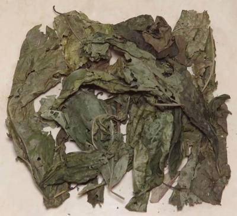

Eweta / Marugbo

[Eweta, Marugbo (Nigeria (Ikale, Ilaje, Apoi)); Dagba (Nigeria (Urhobo);
(Obenetete (Nigeria (Itsekiri)); Clerodendrum volubile of family
Lamiaceae - formerly family Verbenaceae]
Best known from southern Nigeria, this climbing plant is also reported
from other West African countries and as far south as Angola. The highly
medicinal leaf is used in Nigera as an ingredient in Marugbo (Eweta) soup
and also Gbanunu soup which incorporates other medicinal herbs. Using the
dried leaves these soups have a very dark, almost black color.
More on Herbs.
More on Mints.
Buying:
these leaves are only available dried in North
America, but that's the way it is almost always used in Nigeria, so no
problem. The batch from which the photo specimens were drawn was 2021
US $5.99 for "One Wrap". This measure was about 0.7 ounce, and by volume
(very lightly packed) 2-1/2 cups. This volume is about what is called
for in most recipes for the Nigerian soups, so "wrap" may be a legitimate
measure there.
Health & Nutrition:
These leaves are relatively high in
Protein and minerals: Manganese (4.45 mg/g), Magnesium, Zinc (1.56 mg/g),
Selenium (0.21 mg/kg), also Calcium, Phosphorus, and include Vitamins C and
E, Flavonoids (124 mg/g), and various micronutrients. In Nigeria these
leaves are used to treat many diseases and disorders, including diabetes.
Usefulness for treating neurodegenerative diseases (Alzheimer's, Parkinson's)
has been medically confirmed.
mt_ewetaz 211228 - www.clovegarden.com
©Andrew Grygus - agryg@clovegaden.com - Photos on this
page not otherwise credited are © cg1 -
Linking to and non-commercial use of this page permitted